Design Implementation of logic functions using multiplexer IC 74153
1) Verification of IC.
2) Implementation of 8:1 Mux by cascading 2 4:1 mux in IC 74153
3) Boolean function implementation For Example:
F(A,B,C) = Σm( 0,1,4,6,7 )
F(A,B,C,D)= Σm( 2,4,5,7,10,14 )
Multiplexer are combinational digital circuits equating as controlled switches with several data inputs (I0, I1, I2 …) & one single data output (“out”). At any time one of the I/p is transmitted to output. According to binary signals applied on control pairs to circuit. Usually the number of data inputs is a power of two. Multiplexing is the process of transmitting a large no. of information units over a small no. of channel / digital multiplexer is a combinational large circuit which performs the operation of multiplexing . It selects the operation of multiplexing. It selects the operation of binary information from one of the many input lines & transfer to a single o/p line. Multiplexer is called a data selector or multiposition switch because it selects one of the many input. Selection of a particular line is controlled by a set of a selection lines or selects inputs. The number of select lines depends upon no. of input lines. Generally there is ‘n’ selects line for ‘m’ input lines. By applying a particular code on select lines is transmitted on the output lines.
Block Diagram:
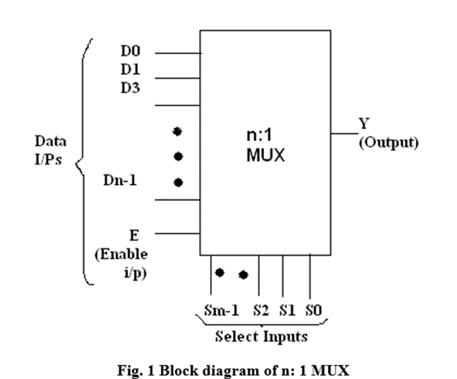
1] 2*1 Multiplexer:
In 2×1 multiplexer, there are only two inputs, i.e., A0 and A1, 1 selection line, i.e., S0 and single outputs, i.e., Y. On the basis of the combination of inputs which are present at the selection line S0, one of these 2 inputs will be connected to the output. The block diagram and the truth table of the 2×1 multiplexer are given below.
Block Diagram:
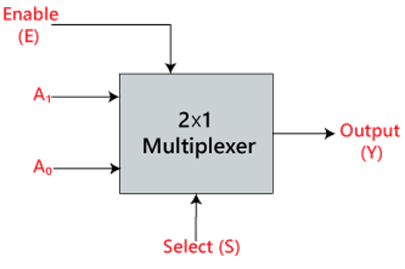
Truth Table:
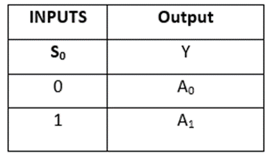
The logical expression of the term Y is as follows:
Y=(S0*A0) + (S0*A1)
Logic Diagram:
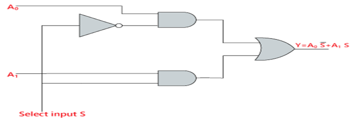
Uses of Mux:
1. Use for Boolean function implementation.
2. Construct a common bus system.
3. To select between multiple sources & signal destination.
4. Inter register transfer.
Advantages:
1. Simplification of logic expression not required.
2. Logic design is simplified.
Disadvantages:
Only one function can be implemented using one MUX. Hence they can’t be used in combinational logic circuit which contains many function.
1] VERIFICATION OF IC 74153:
IC 74153 is a dual layer 4:1 MUX. It has four input lines for (I0D-I3D) for second MUX & active high output. ‘Ya’, ‘Yb’ (1Y or 2Y). It has select lines S1S0 common to both MUX. The Enable inputs are active low, Ea&Eb(1G and 2G).
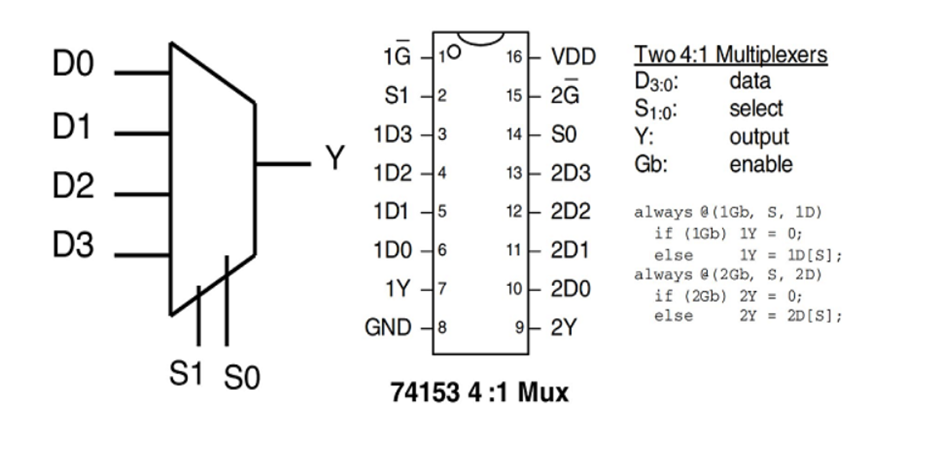
2] CASCADING OF IC 74153:
Cascading is done to expand two or more MUX IC’s to a digital multiplexer with larger no. of inputs i.e. multiplexer stocks or tress is designed. The enable input is used for cascading. In case of IC 74153 we have only two select lines. But for certain application 3 select lines are required then it can be obtained by cascading using enable. Now with 3 select lines we have 8 combinations. Out of this combination the MSB is O. MSB is 1 for last four combination so we can use these MSB to select any 1 MUX out of two by connecting it to E pin of first 4:1 MUX.
Function table of IC 74153 as 8: 1 Mux by cascading 2 4:1 Mux:
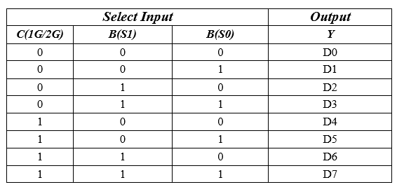
3] FUNCTION IMPLEMENTATION:
1) Y= ∑ m (0, 1, 4, 6, 7)
This expression is in Standard SOP form and it is three variable function. So, we need to use multiplexer with three select inputs i.e. 8:1 Multiplexer. B For Boolean function in Standard SOP form we connect data inputs corresponding to the min terms present in the given function to VCC and remaining data inputs to ground.
Truth Table:
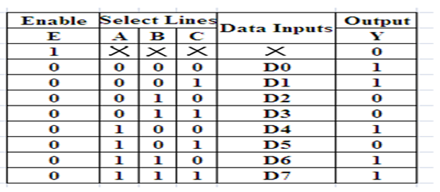
Circuit Diagram:
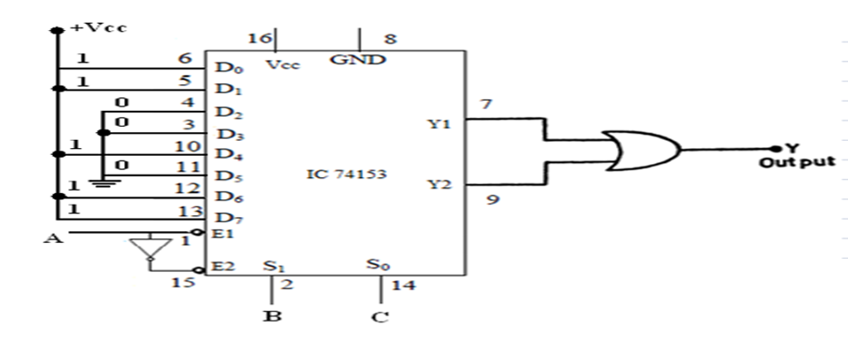
2) Y(A, B, C, D) = ∑m (2, 4, 5, 7, 10, 14)
Design Using MSB Bit A:
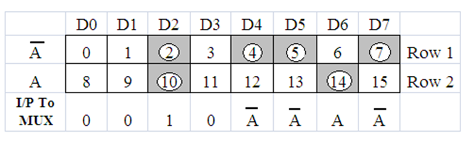
Circuit Diagram:
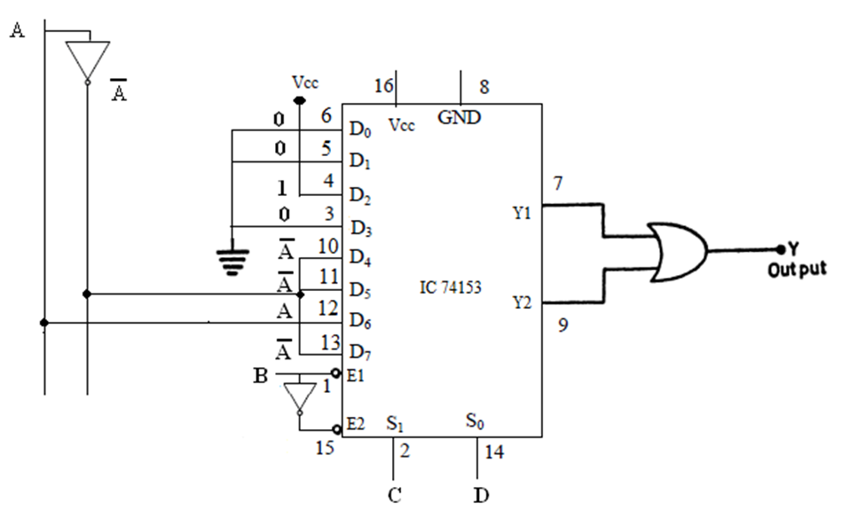
Design Using LSB Bit D:
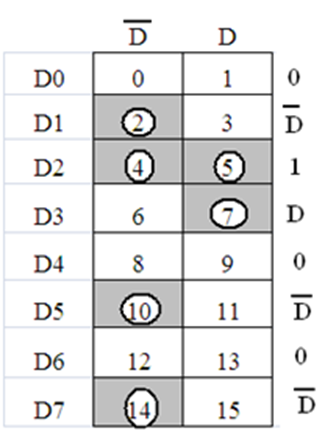
Circuit Diagram:
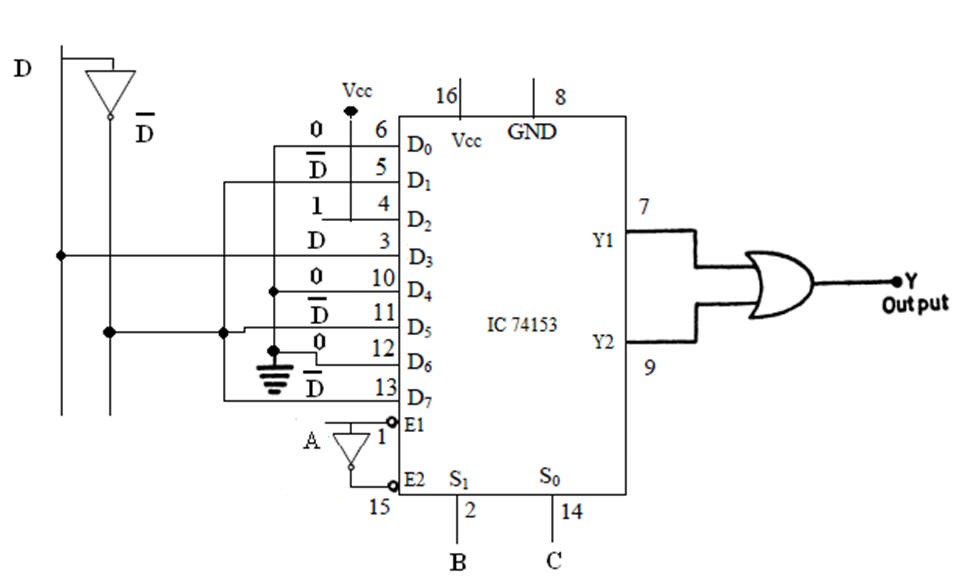
Truth Table:
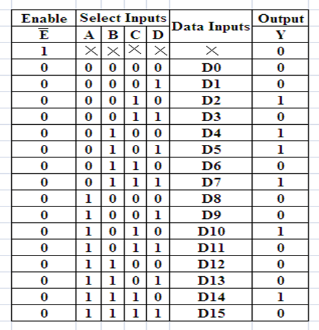
Follow the below steps
1. Connections were given as per circuit diagram.2. Logical inputs were given as per truth table.
3. Observe the logical output and verify with the truth tables.
Here you can embed an interactive simulation tool or provide links to simulation resources.
Q.1] What is a multiplexer?
A multiplexer, or MUX, is a digital device that selects one of several input signals and forwards the selected input to a single output line. It functions like an electronic switch, allowing multiple signals to share one device or resource.
Q.2] What are the main types of multiplexers?
• 2-to-1 Multiplexer: Selects between 2 input lines.
• 4-to-1 Multiplexer: Selects between 4 input lines.
• 8-to-1 Multiplexer: Selects between 8 input lines.
• 16-to-1 Multiplexer: Selects between 16 input lines.
Q.3] How does a multiplexer work?
A multiplexer uses selection lines to choose which input line to connect to the output. For instance, a 4-to-1 multiplexer has 2 selection lines (because 22=4 ) that determine which of the 4 inputs is connected to the output.
Q.4] What are the applications of multiplexers?
• Data routing in digital circuits.
• Signal selection in communication systems.
• Data multiplexing in data acquisition systems.
• Function implementation in digital design (e.g., logic functions).
• Resource sharing in computer systems (e.g., bus systems).
Q.5] How do you choose the right multiplexer for your design?
• Number of inputs: Determine how many inputs you need to select from.
• Number of select lines: Ensure you have enough select lines for your inputs.
• Speed: Check the propagation delay to ensure it meets your timing requirements.
• Power consumption: Consider the power requirements for your application.
• Package type: Choose the appropriate IC package for your circuit board.
- Reference 1: “Digital Fundamentals” by Floyd & Jain
- Reference 2: R. P. Jain, “Modern Digital Electronics”, 3rd Edition, Tata McGraw-Hill
- Reference 3: 3. Malvino, D.Leach“Digital Principles and Applications”, 5th edition, Tata McGraw- Hill